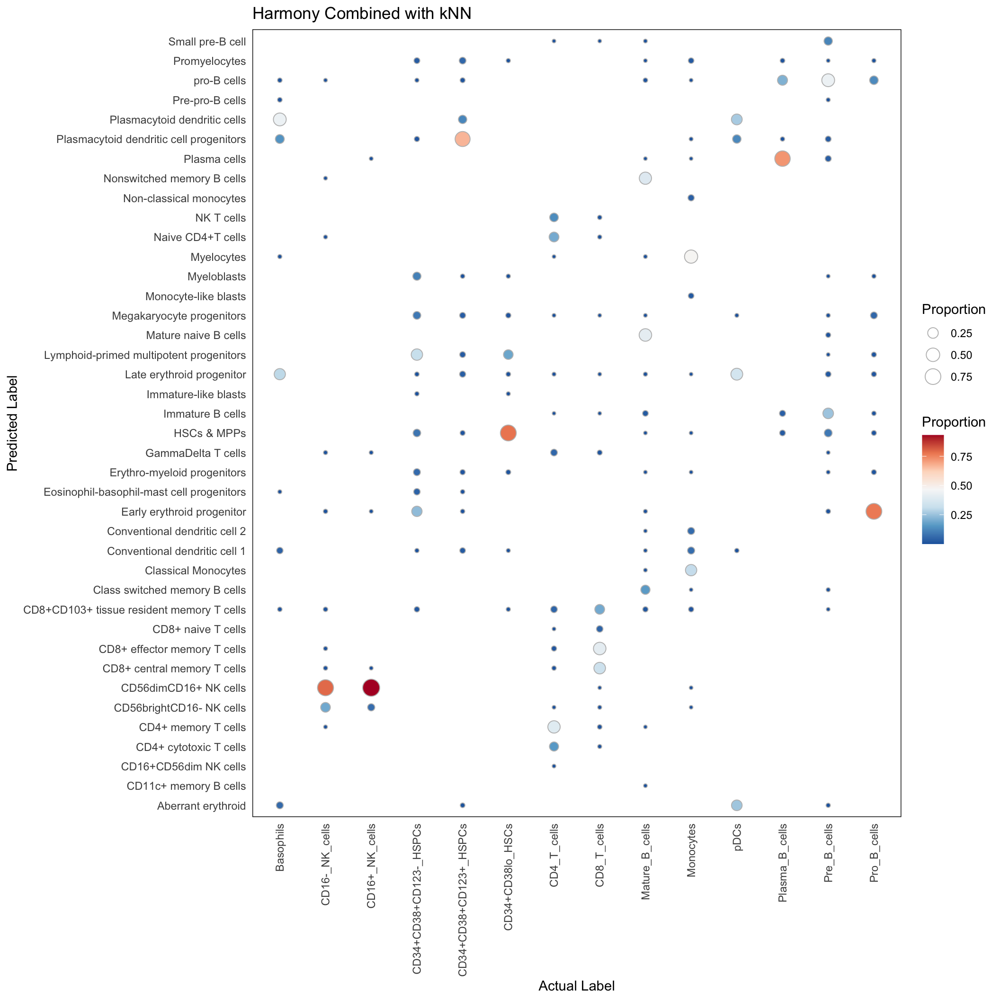
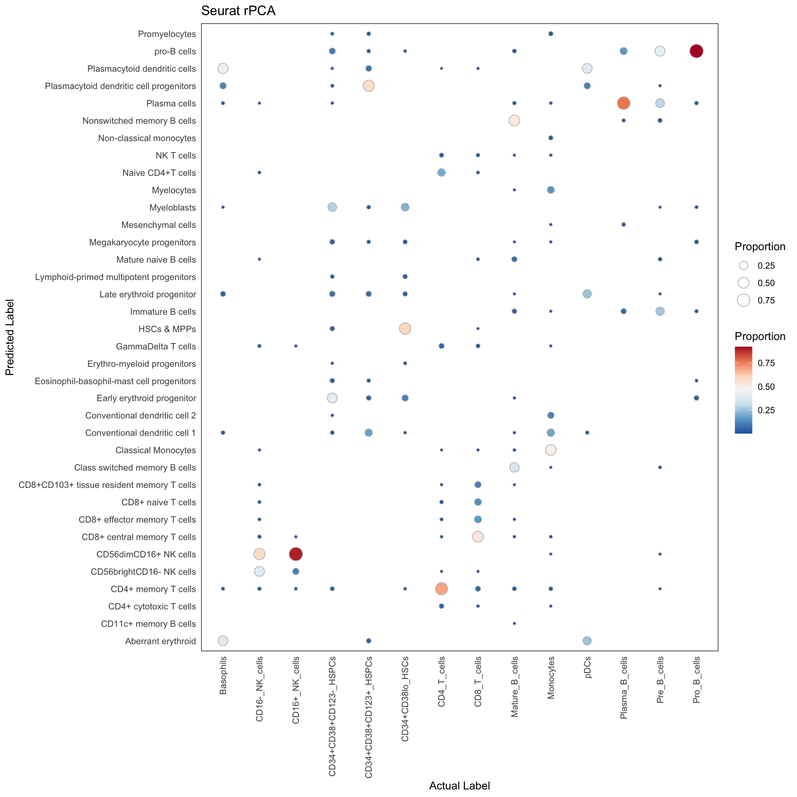

Last updated: 2023-07-28
Checks: 7 0
Knit directory: SuperCellCyto-analysis/
This reproducible R Markdown analysis was created with workflowr (version 1.7.0). The Checks tab describes the reproducibility checks that were applied when the results were created. The Past versions tab lists the development history.
Great! Since the R Markdown file has been committed to the Git repository, you know the exact version of the code that produced these results.
Great job! The global environment was empty. Objects defined in the global environment can affect the analysis in your R Markdown file in unknown ways. For reproduciblity it’s best to always run the code in an empty environment.
The command set.seed(42) was run prior to running the
code in the R Markdown file. Setting a seed ensures that any results
that rely on randomness, e.g. subsampling or permutations, are
reproducible.
Great job! Recording the operating system, R version, and package versions is critical for reproducibility.
Nice! There were no cached chunks for this analysis, so you can be confident that you successfully produced the results during this run.
Great job! Using relative paths to the files within your workflowr project makes it easier to run your code on other machines.
Great! You are using Git for version control. Tracking code development and connecting the code version to the results is critical for reproducibility.
The results in this page were generated with repository version 7f102a5. See the Past versions tab to see a history of the changes made to the R Markdown and HTML files.
Note that you need to be careful to ensure that all relevant files for
the analysis have been committed to Git prior to generating the results
(you can use wflow_publish or
wflow_git_commit). workflowr only checks the R Markdown
file, but you know if there are other scripts or data files that it
depends on. Below is the status of the Git repository when the results
were generated:
Ignored files:
Ignored: .DS_Store
Ignored: .Rproj.user/
Ignored: code/.DS_Store
Ignored: code/b_cell_identification/.DS_Store
Ignored: code/batch_correction/.DS_Store
Ignored: code/explore_supercell_purity_clustering/.DS_Store
Ignored: code/explore_supercell_purity_clustering/functions/.DS_Store
Ignored: code/explore_supercell_purity_clustering/louvain_all_cells/.DS_Store
Ignored: data/.DS_Store
Ignored: data/bodenmiller_cytof/
Ignored: data/explore_supercell_purity_clustering/
Ignored: data/haas_bm/
Ignored: data/oetjen_bm_dataset/
Ignored: data/trussart_cytofruv/
Ignored: output/.DS_Store
Ignored: output/bodenmiller_cytof/
Ignored: output/explore_supercell_purity_clustering/
Ignored: output/label_transfer/
Ignored: output/oetjen_b_cell_panel/
Ignored: output/trussart_cytofruv/
Note that any generated files, e.g. HTML, png, CSS, etc., are not included in this status report because it is ok for generated content to have uncommitted changes.
These are the previous versions of the repository in which changes were
made to the R Markdown (analysis/label_transfer.Rmd) and
HTML (docs/label_transfer.html) files. If you’ve configured
a remote Git repository (see ?wflow_git_remote), click on
the hyperlinks in the table below to view the files as they were in that
past version.
| File | Version | Author | Date | Message |
|---|---|---|---|---|
| html | 366514e | Givanna Putri | 2023-07-28 | Build site. |
| Rmd | 402358b | Givanna Putri | 2023-07-28 | wflow_publish(c("analysis/*Rmd")) |
In this analysis, we explore the potential of implementing a cell type label transfer workflow from a CITEseq dataset onto a collection of supercells derived from a cytometry data.
The reference CITEseq data used in this study is obtained from a bone marrow sample of a healthy adult, quantified using AbSeq (Triana et al. 2021)
For cytometry data, we utilised a healthy bone marrow sample (Levine et al. 2015) from a benchmarking study on clustering (Weber and Robinson 2016).
The label transfer workflow is as the following. For the cytometry data, we began with transforming markers using an arcsinh transformation with a co-factor of 5, while for the CITEseq data, we used Centered Log Ratio (CLR) transformation. Subsequently, SuperCellCyto was applied with a gamma value of 20. Following this, for both the supercells and CITEseq data, we retain only the common proteins/markers. Lastly, we utilised either the Seurat rPCA (Hao et al. 2021) or Harmony (Korsunsky et al. 2019) and k-Nearest Neighbor (kNN) methods to perform the label tranfer. For the latter, Harmony was employed for integration the supercell with the CITEseq data, while kNN was employed assigning supercell with the cell type annotation in the CITEseq data.
The scripts necessary to replicate the workflow are available in
code/label_transfer directory.
The ensuing results are derived from the aforementioned workflow application.
library(pheatmap)
library(data.table)
library(viridis)
library(scales)
library(ggplot2)
library(RColorBrewer)
library(here)harmony_res <- fread(here("output", "label_transfer", "harmony_knn.csv"))
rpca_res <- fread(here("output", "label_transfer", "seurat_rPCA.csv"))We shall remove the unassigned cells as we don’t know their identity.
harmony_res <- harmony_res[Gated_Population != "unassigned"]
rpca_res <- rpca_res[Gated_Population != "unassigned"]Here, we first employ Harmony do align supercells with the CITEseq data, and thereafter use kNN classifier to transfer the label of the aligned CITEseq data to supercell.
conf_mat <- with(harmony_res, table(predicted_population, Gated_Population))
conf_mat_proportion <- sweep(conf_mat, 2, colSums(conf_mat), "/")
conf_mat_dt <- data.table(conf_mat_proportion)
conf_mat_dt <- conf_mat_dt[order(Gated_Population, predicted_population)]
conf_mat_dt <- conf_mat_dt[N > 0]ggplot(conf_mat_dt, aes(x=Gated_Population, y=predicted_population)) +
geom_point(aes(size = N, fill = N), pch=21, color="grey") +
scale_fill_distiller(palette = "RdBu", direction = -1) +
theme_minimal() +
theme(
panel.border = element_rect(colour = "black", fill=NA, linewidth=0.5),
axis.text.x = element_text(angle = 90, vjust = 0.5, hjust=1),
panel.grid.major = element_blank()
) +
labs(x = "Actual Label", y = "Predicted Label", size = "Proportion", fill = "Proportion",
title = "Harmony Combined with kNN")
| Version | Author | Date |
|---|---|---|
| 366514e | Givanna Putri | 2023-07-28 |
conf_mat <- with(rpca_res, table(predicted_population, Gated_Population))
conf_mat_proportion <- sweep(conf_mat, 2, colSums(conf_mat), "/")
conf_mat_dt <- data.table(conf_mat_proportion)
conf_mat_dt <- conf_mat_dt[order(Gated_Population, predicted_population)]
conf_mat_dt <- conf_mat_dt[N > 0]ggplot(conf_mat_dt, aes(x=Gated_Population, y=predicted_population)) +
geom_point(aes(size = N, fill = N), pch=21, color="grey") +
scale_fill_distiller(palette = "RdBu", direction = -1) +
theme_minimal() +
theme(
panel.border = element_rect(colour = "black", fill=NA, linewidth=0.5),
axis.text.x = element_text(angle = 90, vjust = 0.5, hjust=1),
panel.grid.major = element_blank()
) +
labs(x = "Actual Label", y = "Predicted Label", size = "Proportion", fill = "Proportion",
title = "Seurat rPCA")
| Version | Author | Date |
|---|---|---|
| 366514e | Givanna Putri | 2023-07-28 |
sessionInfo()R version 4.2.3 (2023-03-15)
Platform: aarch64-apple-darwin20 (64-bit)
Running under: macOS Monterey 12.6
Matrix products: default
BLAS: /Library/Frameworks/R.framework/Versions/4.2-arm64/Resources/lib/libRblas.0.dylib
LAPACK: /Library/Frameworks/R.framework/Versions/4.2-arm64/Resources/lib/libRlapack.dylib
locale:
[1] en_US.UTF-8/en_US.UTF-8/en_US.UTF-8/C/en_US.UTF-8/en_US.UTF-8
attached base packages:
[1] stats graphics grDevices utils datasets methods base
other attached packages:
[1] here_1.0.1 RColorBrewer_1.1-3 ggplot2_3.4.1 scales_1.2.1
[5] viridis_0.6.2 viridisLite_0.4.1 data.table_1.14.8 pheatmap_1.0.12
[9] workflowr_1.7.0
loaded via a namespace (and not attached):
[1] tidyselect_1.2.0 xfun_0.39 bslib_0.4.2 colorspace_2.1-0
[5] vctrs_0.5.2 generics_0.1.3 htmltools_0.5.4 yaml_2.3.7
[9] utf8_1.2.3 rlang_1.0.6 jquerylib_0.1.4 later_1.3.0
[13] pillar_1.8.1 glue_1.6.2 withr_2.5.0 lifecycle_1.0.3
[17] stringr_1.5.0 munsell_0.5.0 gtable_0.3.1 evaluate_0.20
[21] labeling_0.4.2 knitr_1.42 callr_3.7.3 fastmap_1.1.0
[25] httpuv_1.6.9 ps_1.7.2 fansi_1.0.4 highr_0.10
[29] Rcpp_1.0.10 promises_1.2.0.1 cachem_1.0.6 jsonlite_1.8.4
[33] farver_2.1.1 fs_1.6.1 gridExtra_2.3 digest_0.6.31
[37] stringi_1.7.12 processx_3.8.0 dplyr_1.1.0 getPass_0.2-2
[41] rprojroot_2.0.3 grid_4.2.3 cli_3.6.0 tools_4.2.3
[45] magrittr_2.0.3 sass_0.4.5 tibble_3.1.8 whisker_0.4.1
[49] pkgconfig_2.0.3 rmarkdown_2.20 httr_1.4.4 rstudioapi_0.14
[53] R6_2.5.1 git2r_0.31.0 compiler_4.2.3